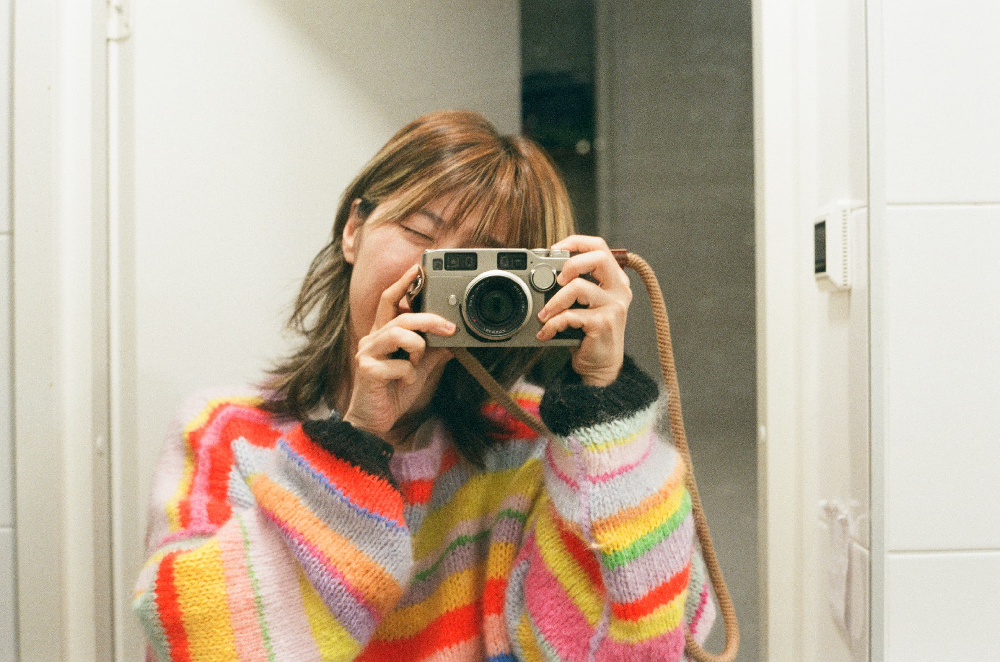

My name is Heya 해나 Kwon. I like to create, code, research, and get people together.
I am interested in creative sustainability, visual storytelling, participatory art and design, sound, critical data studies, and digital ethics.
Currently, I am studying New Media at Aalto University in Espoo, Finland. Before that, I lived in California and worked as a software engineer at Bandcamp. Before that, I lived as an artist, mainly as a music producer, while working in the service industry.
On my free time, I often draw, read, and journal.

Get in touch :) heya0@proton.me